A seamless home shopping experience for furniture, décor, plants and candles — all in one place.
Homely is a mobile application designed to simplify home shopping by bringing furniture, home décor, candles, plants and kitchen essentials together in one convenient platform.
The concept client wanted a modern, inspiring experience that helps people furnish and decorate with confidence — solving the pain of finding matching products, comparing options across many stores, and picturing how items will fit into a real living space.
“Users look for style, quality, and inspiration. Curated collections and room ideas can help them make confident choices.”
Interior designer
“Customers want convenience, trust, and variety. Product details, reviews and easy checkout make a big difference.”
Home store owner
“I want a simple app that helps me find everything for my home in one place without spending hours searching.”
Potential user · young professional
Omar recently moved into his own apartment and wants to furnish it in a simple, modern way. He has little interest in interior design and prefers quick, practical solutions — he relies on online shopping, but finds choosing matching furniture, décor and kitchen items confusing.
Place a sofa or vase in the room through the camera, rotate and reset it before buying.
Pick 4+ categories — sofas, candles, plants, kitchen — so the home feed feels personal from day one.
Dedicated shops for Furniture, Plants, Décor and Candles with filters by style, price and rating.
Choose colour, size, scent or add a personal touch on décor and candles.
Pick a delivery date and time, pay by card or cash, then follow every order status.

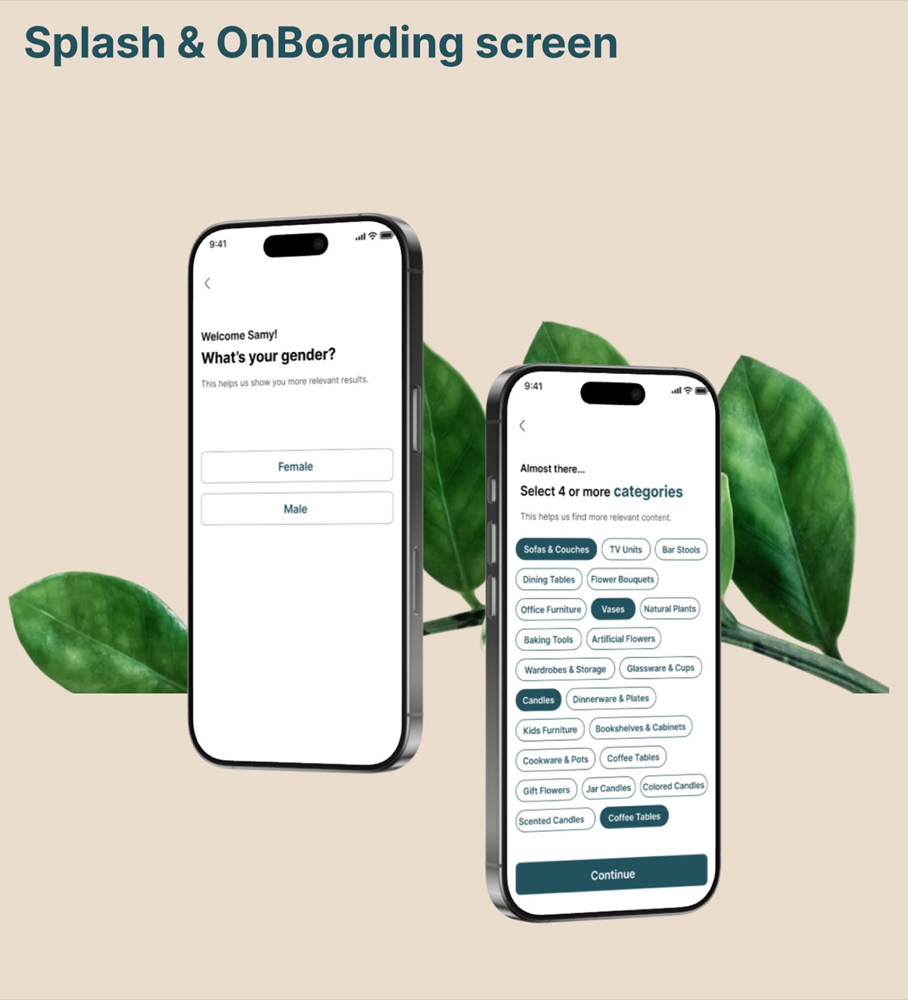


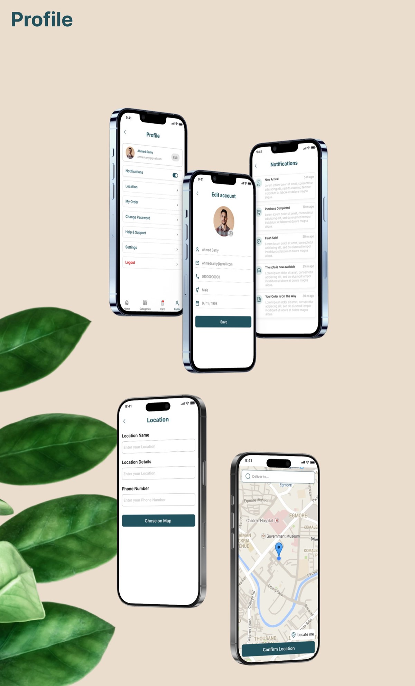
36 boards · research, flows, design system and all screens

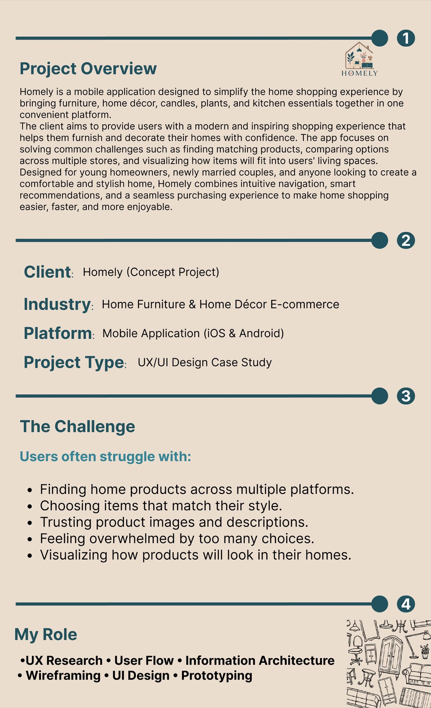

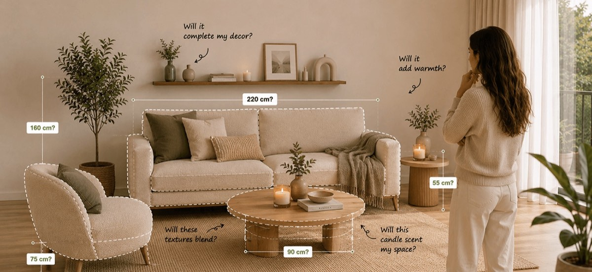
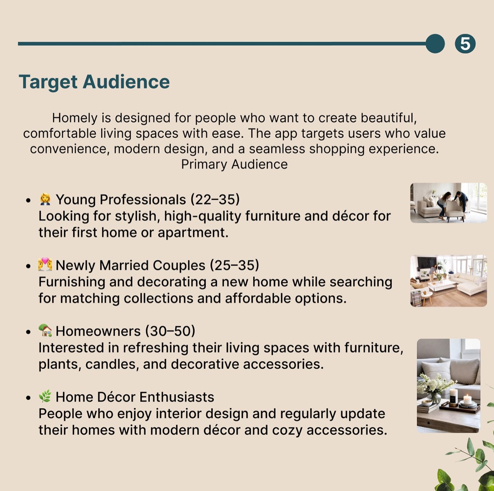


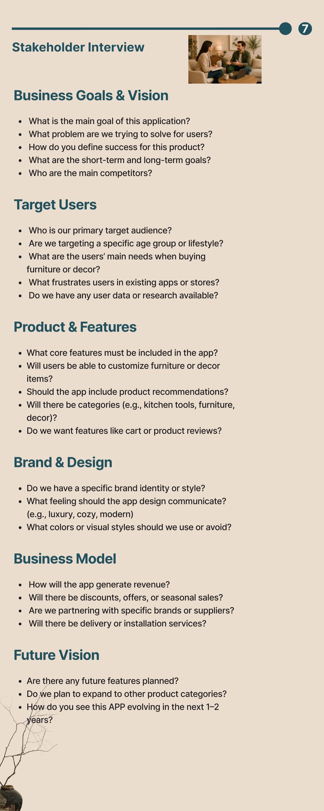

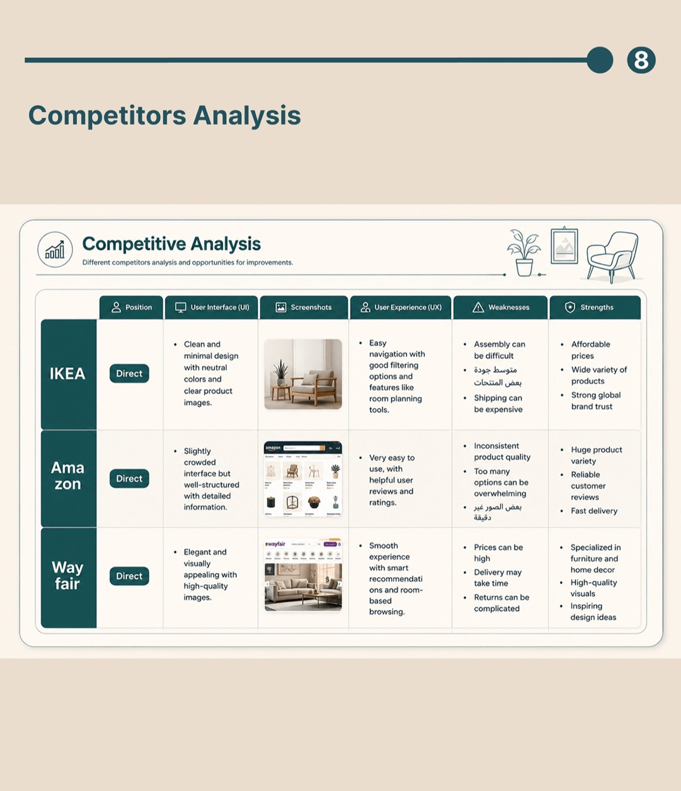
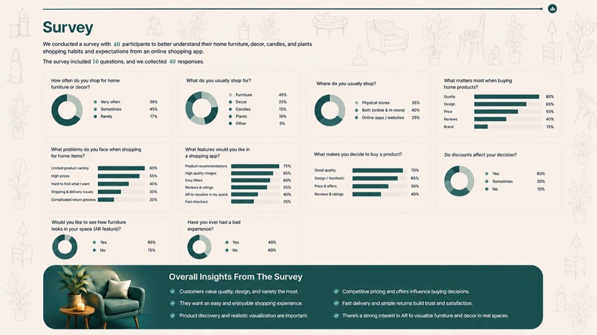

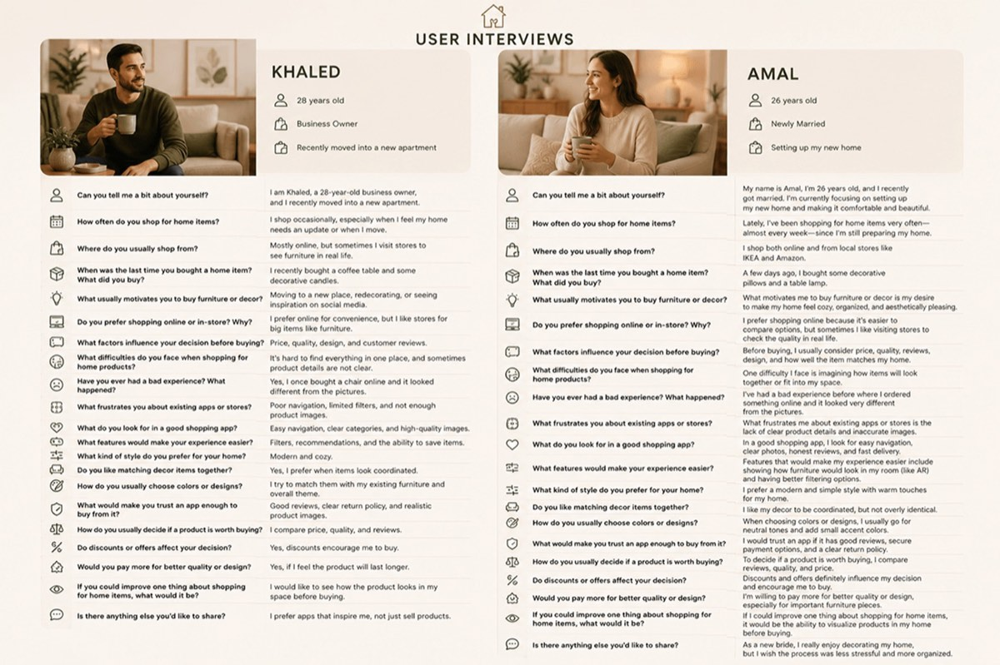


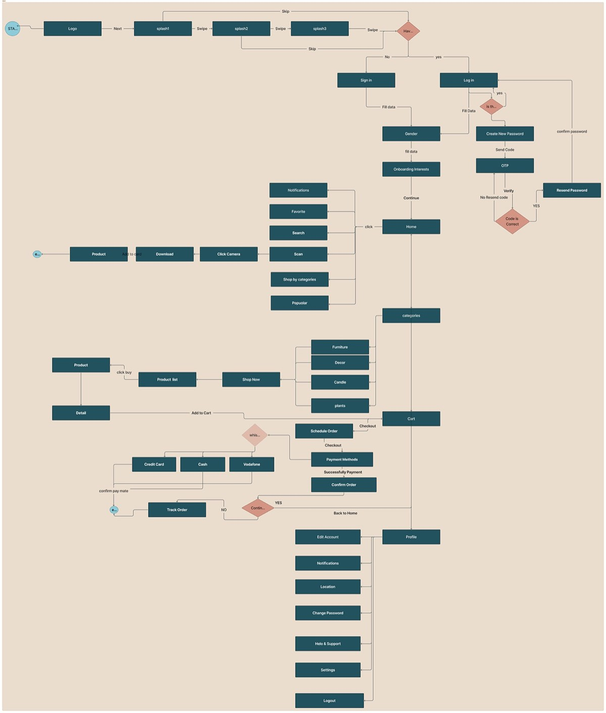
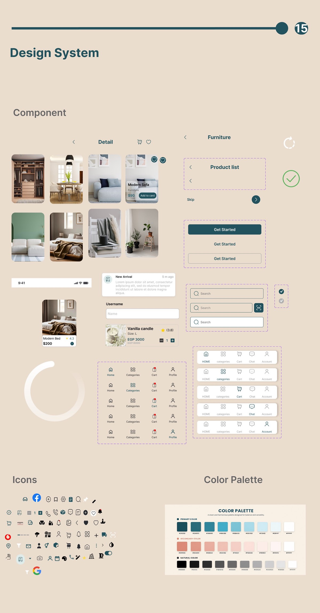

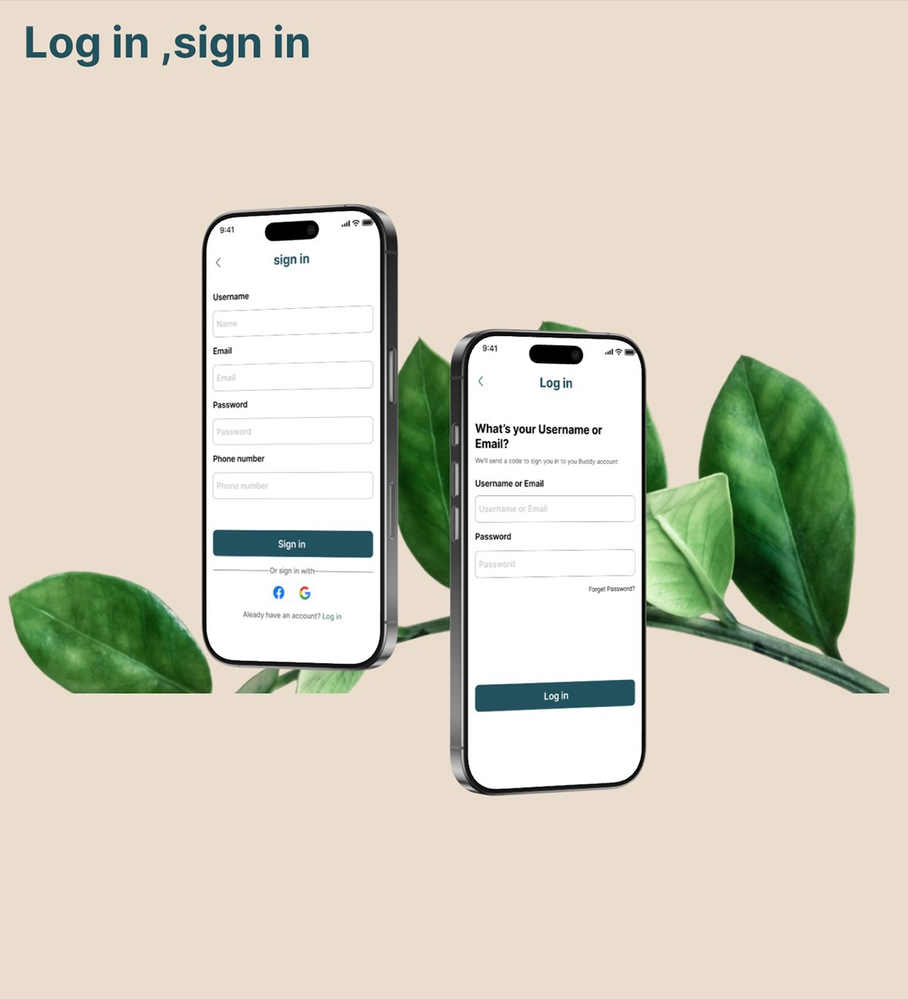


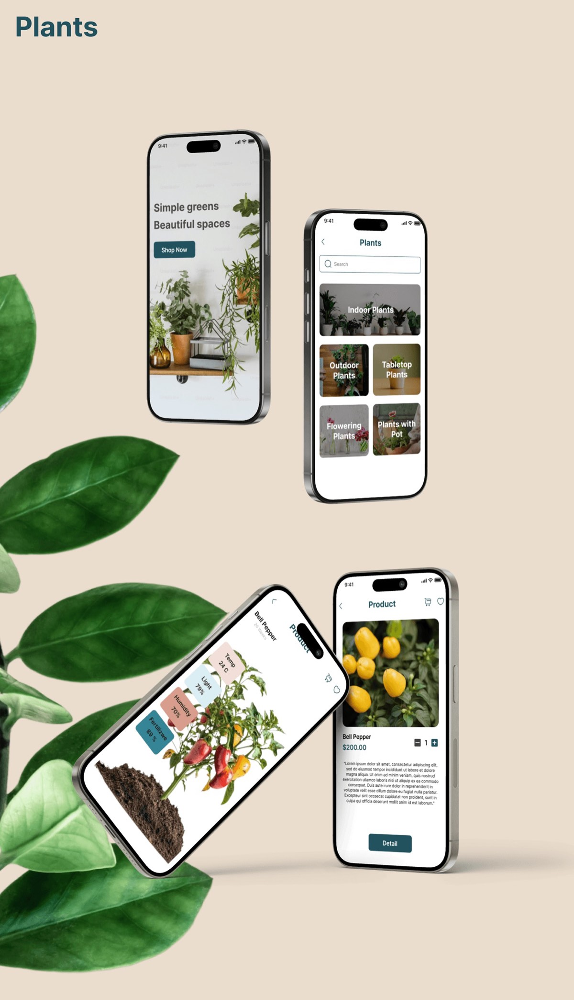


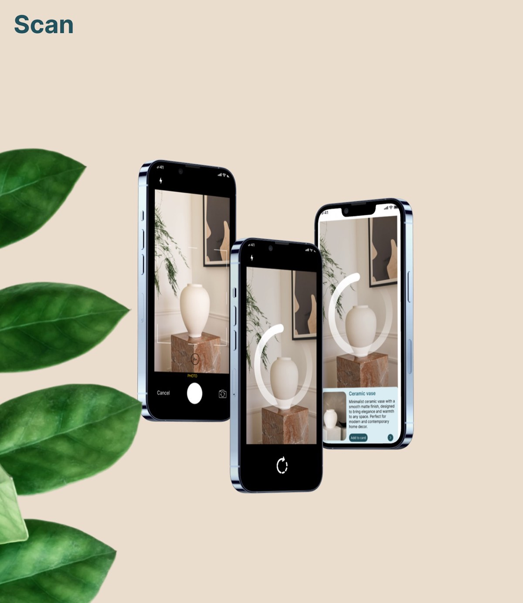